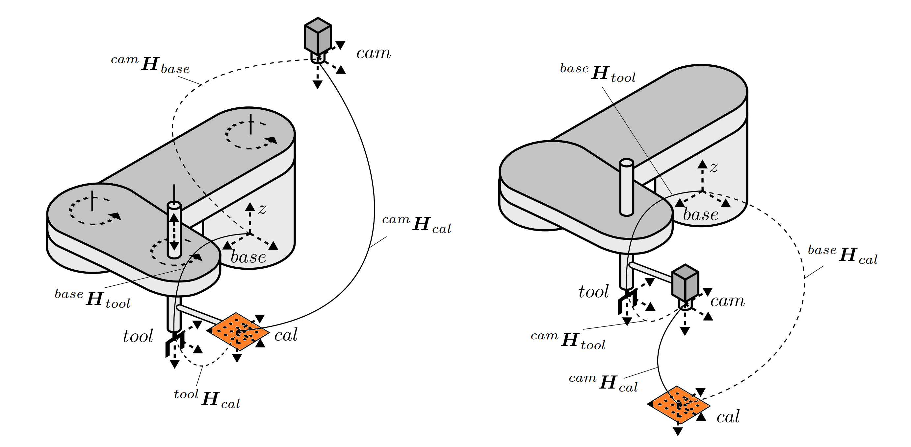
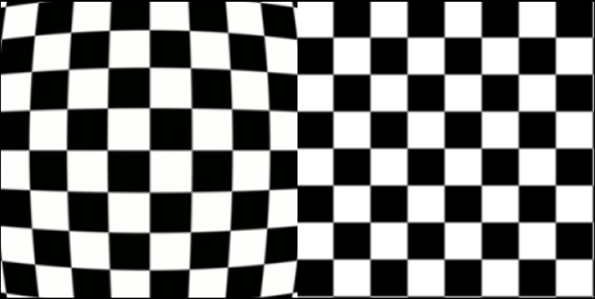
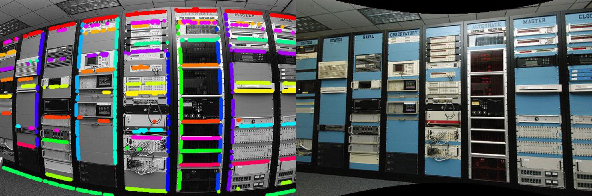
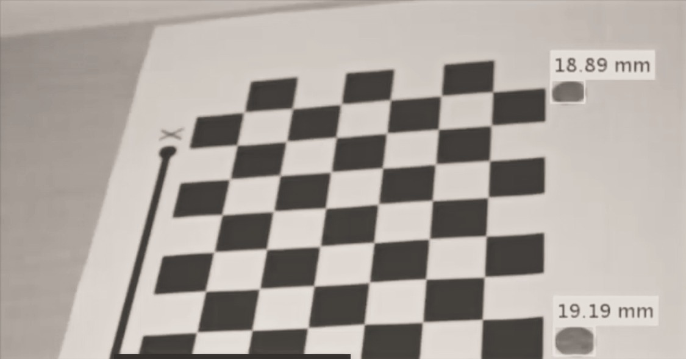

Zum Inhalt
Menü
Startseite
Anwendungen
Kontakt
Startseite
Anwendungen
Anwendungen

Quelle: M.Ulrich, 2014
Hand-Auge Kalibrierung eines Robotersystems
Verzeichnungskorrektur


Quelle: M.Alemán-Flores, 2013

Quelle: Matlab, 2020
Objektmessungen in realen Maßeinheiten